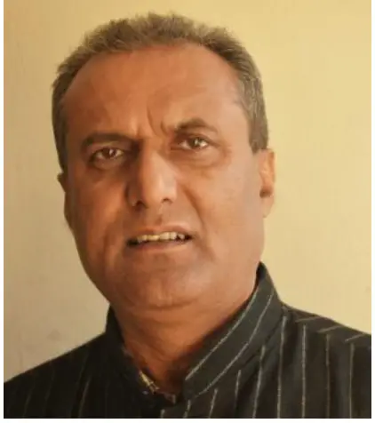
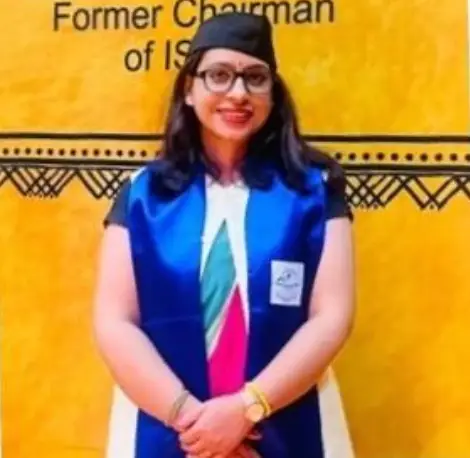
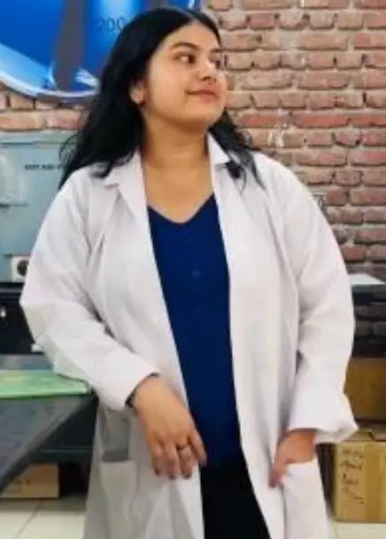
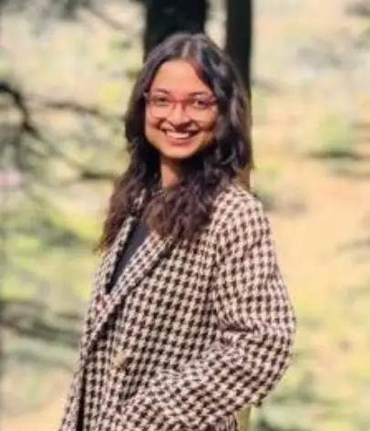
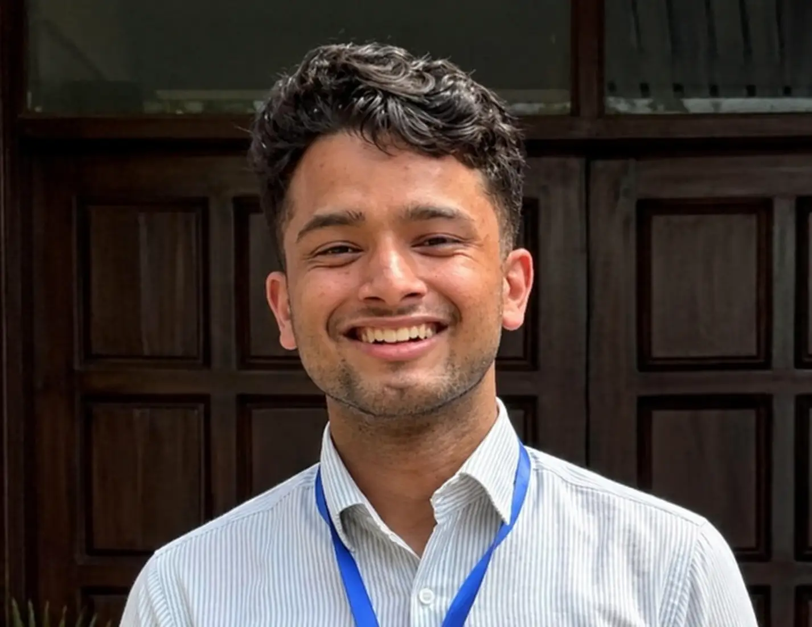
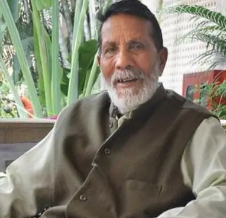
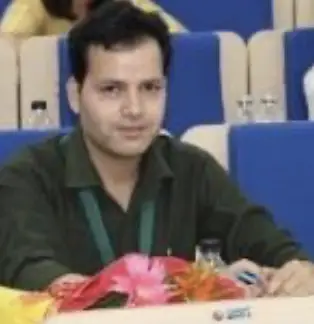

Dedicated to environmental conservation, sustainable livelihoods, and the preservation of Uttarakhand's rich heritage.
HIMWAL (Himalayan Women, Awareness and Livelihood) Society is an Uttarakhand-based NGO founded under the Societies Registration Act 21, 1860.
Our work spans rural areas and urban centers across Uttarakhand. We work locally to implement grassroots initiatives, ensuring a broad and diverse impact. By focusing on the intersection of ecology and community, we aim to develop comprehensive strategies to address the various environmental challenges faced by the sensitive Himalayan ecosystem.
Registration No: UK06008122023012444
Understanding the ground realities of Uttarakhand drives our mission forward.
Uttarakhand is witnessing unprecedented ecological and socio-economic shifts. The traditional harmony between the hill communities and nature is being disrupted by climate change and economic pressures.
Grassroots intervention is no longer optional; it is essential for the survival of the region's unique biodiversity and the sustenance of its people.
A significant percentage of natural mountain springs are drying up or becoming seasonal, directly threatening local agriculture and daily water security.
Rapid out-migration in search of employment is leading to hundreds of 'ghost villages' across the state, leaving agricultural lands barren and traditional knowledge vulnerable to extinction.
Ensuring the health and resilience of Uttarakhand's rich biodiversity and natural resources for generations to come.
To enhance the conservation of endangered and vulnerable species in the high-altitude regions of Uttarakhand through community engagement, scientific research, and sustainable practices, ensuring the long-term preservation of biodiversity and ecosystems.
To analyze the impacts of climate change on the region's ecosystems, with a particular focus on changes in water resources (especially spring water), the frequency of natural disasters, agriculture and the livelihoods of the Himalayan communities.
HIMWAL empowers rural communities in high-altitude regions by promoting sustainable resource use, enhancing livelihoods through scientific innovation and value addition, and fostering community-led environmental conservation for long-term ecological resilience.
Raise awareness about the importance of the Himalayan ecosystems and the threats they face through educational programs, workshops, and public campaigns.
Protecting folk-music, folk-dance, rituals, festivals, historical sites, and traditional arts.
Recording and archiving diverse cultural expressions to create a comprehensive repository.
Promoting heritage locally and internationally to foster cultural pride and attract cultural tourism.
The dedicated individuals working to preserve Uttarakhand's ecology and heritage.

President

Founder & Scientist

Project Coordinator
Operations and Outreach Associate, Co-Founder

IT and Digital operation Associate

Technical Member
Technical Member
Our mentors and advisors are the guiding force behind HIMWAL, providing invaluable expertise and leadership to help us achieve our mission of preserving Uttarakhand's ecology and heritage.

Principal Advisor

Advisor, Ph.D (Geology), Master of Science (Geology)
Advisor, PhD in Environmental-Analytical Chemistry
Advisor, PhD in Operations Research